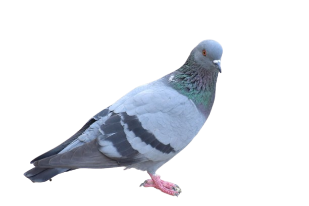
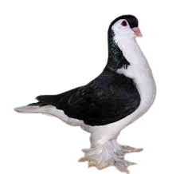
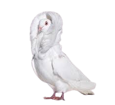

Merpati adalah burung yang dikenal karena kemampuannya terbang cepat dan kembali ke tempat asalnya dengan akurasi tinggi. Berukuran sedang dengan tubuh ramping, paruh pendek, dan sayap kuat, merpati sering ditemukan di berbagai lingkungan, mulai dari perkotaan hingga pedesaan. Bulu mereka bervariasi dalam warna, dari putih, abu-abu, hingga kecokelatan, tergantung pada spesiesnya. Burung ini memiliki sifat sosial dan setia pada pasangan seumur hidup. Selain itu, merpati telah lama digunakan dalam sejarah sebagai pembawa pesan karena insting navigasinya yang luar biasa.
Merpati Frillback adalah jenis merpati hias yang dikenal karena bulu uniknya yang melengkung atau berombak, terutama pada sayap dan punggungnya. Keindahan bulunya membuatnya sangat diminati dalam kontes burung hias. Burung ini memiliki tubuh yang proporsional dengan postur elegan, mata cerah, serta paruh yang relatif pendek. Warna bulunya bervariasi, termasuk putih, hitam, merah, biru, dan perak. Selain tampilannya yang menarik, Frillback juga memiliki sifat tenang dan jinak, sehingga mudah dipelihara. Keunikan dan keanggunannya menjadikannya salah satu jenis merpati yang sangat dihargai di kalangan penghobi burung.
Merpati Lahore adalah jenis merpati hias yang terkenal karena pola warnanya yang khas dan tubuhnya yang besar serta gagah. Biasanya, bagian kepala, leher, dan ekornya berwarna gelap, sementara dada dan perutnya berwarna putih, menciptakan kontras yang elegan. Merpati ini berasal dari wilayah Lahore, Pakistan, dan awalnya dibudidayakan untuk keindahannya. Selain tampilannya yang menarik, Lahore memiliki sifat yang tenang, jinak, dan mudah beradaptasi dengan lingkungan, menjadikannya pilihan favorit bagi para penghobi burung hias. Dengan bulu yang lembut dan postur yang anggun, merpati ini sering dipamerkan dalam kontes kecantikan burung.
Merpati Jacobin adalah jenis merpati hias yang unik dan mencolok karena bulu panjangnya yang membentuk kerah tebal di sekitar kepala, menyerupai tudung atau jubah biarawan. Ciri khas ini membuat wajahnya sebagian besar tersembunyi di balik bulu, memberikan tampilan yang anggun dan aristokratis. Jacobin memiliki tubuh ramping, postur tegak, serta sayap dan ekor yang proporsional. Warna bulunya bervariasi, termasuk putih, hitam, merah, kuning, dan biru. Meskipun memiliki penampilan megah, merpati ini cenderung lebih pemalu dibandingkan jenis lain dan membutuhkan perawatan khusus untuk menjaga keindahan bulunya. Karena keunikannya, Jacobin sering menjadi sorotan dalam kompetisi burung hias dan koleksi para pecinta merpati.